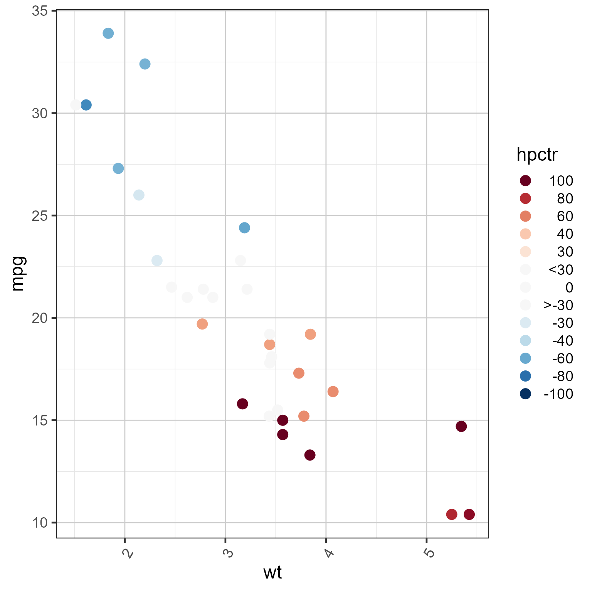
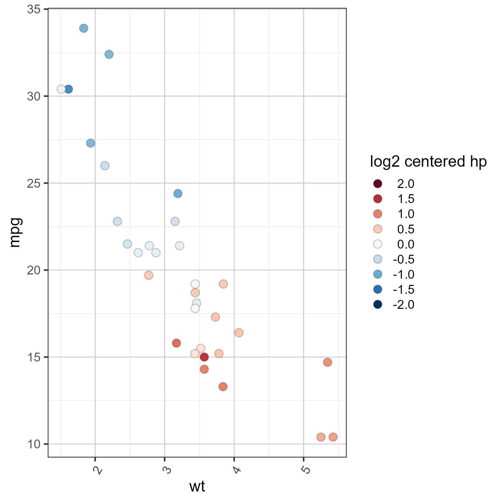
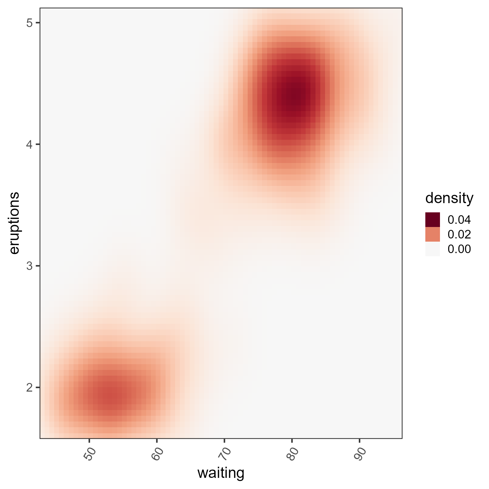

Continuous divergent color scale for ggplot2, with max and optional floor
Source:R/colorjam-scale-color-div-xf.R
scale_color_div_xf.RdContinuous divergent color scale for ggplot2, with max and optional floor
Usage
scale_color_div_xf(
x = 1,
floor = 0,
lens = 0,
n = 15,
colramp = "RdBu_r",
open_floor = FALSE,
floor_color = NULL,
guide = NULL,
breaks = NULL,
hjust = 1,
aesthetics = "color",
...
)
scale_fill_div_xf(
x = 1,
floor = 0,
lens = 0,
n = 15,
colramp = "RdBu_r",
open_floor = FALSE,
floor_color = NULL,
guide = NULL,
breaks = NULL,
hjust = 1,
aesthetics = "fill",
...
)Arguments
- x
numericwith the value at or above which the maximum color is applied. Default is 1.- floor
numeric, default NULL, with the numeric floor, the value at or above which the first color is applied. This threshold may be suitable when coloring P-values for example, to define a floor at the P-value threshold for statistical significance.- lens
numericvalue, default 0, used to adjust the color intensity, by increasing the rate of color change along the color gradient. Positive values increase intensity, negative values decrease intensity.- n
integernumber of intermediate steps used to define color breaks, passed tocol_div_xf(). Default 15.- colramp
characterrecognized byjamba::getColorRamp(), default 'RdBu_r' is the RColorBrewer divergent palette 'RdBu' which is reversed to blue-white-red. This argument generally accepts one of the following:name of a divergent color ramp from RBrewerColors
single color, which generates a divergent gradient using a complementary color for the opposing direction
vector of colors, used to generate a full gradient
- open_floor
logicaldefault FALSE, whether to apply gradient colors to values below the floor. Generally FALSE is recommended, but TRUE is useful to have some visual indication that there are non-empty values, and can be a viable option in some cases.- floor_color
charactercolor, default NULL, used whenflooris defined. Whenopen_floor=FALSEthefloor_coloris applied as a solid color to all values below the floor. Whenopen_floor=TRUEthefloor_coloris used to define a gradient which is applied up to the floor (and not including the floor value).- guide
GuideLegendobject used by ggplot2 to customize the guide displayed in the legend. Default simply sets the guide legend values to be reversed, so that higher numeric values appear at the top of the legend.- breaks
default NULL uses the breaks and labels defined by
col_div_xf(), otherwise suggestedggplot2::waiver()to use its default.- hjust
numericused to define horizontal justification of numeric labels. Default 1 uses right-alignment.- ...
additional arguments are passed to
ggplot2::continuous_scale().
Value
ggplot2::ScaleContinuous object which inherits ggproto,
suitable to use in ggplot2 composition.
Details
This function is intended to provide ggplot2 color scales
using the same logic applied in col_div_xf().
Specifically, it applies a maximum numeric value to the color range,
and an optional numeric floor.
Other enhancements:
The ggplot2 legend shows discrete steps with labels for each color. This style differs from ggplot2 "colorsteps" which labels the break between colors.
The maximum numeric color value is useful for plots that have a known "practical" range of numeric values. For example, correlation values range from -1 to +1. Some data may contain values between -0.2 and +0.5. Using a "min-max" gradient, the midpoint would be 0.15, and may therefore place the middle ("white" or "black") divergent color at 0.15 instead of 0.0. Further, the color range might extend to 0.5 instead of 1.0.
Similarly, gene expression data is often represented in log2 scale, centered versus a control group, or versus the mean expression for each gene. The practical range might be -5 to +5 in log2 space, which represents -32 to +32 fold in normal space. We argue that changes at or above 32-fold are often adequate to represent with the "max color". Similarly, when changes do not reach 32-fold, it is often helpful to show a consistent color scale that spans 32-fold anyway, so that smaller values are seen with similar visual context.
Future ideas
Support custom numeric positions, and numeric labels.
Consider using the numeric breaks defined by
col_div_xf().
See also
Other colorjam ggplot2:
scale_color_jam(),
scale_color_linear_xf(),
scale_fill_jam(),
theme_jam()
Examples
mtcars2 <- datasets::mtcars;
mtcars2$hpctr <- mtcars2$hp - median(mtcars2$hp)
mtcars2$`log2 centered hp` <- log2(mtcars2$hp) - median(log2(mtcars2$hp))
ggplot2::ggplot(mtcars2, ggplot2::aes(wt, mpg, colour=hpctr)) +
ggplot2::geom_point(size=4) +
scale_color_div_xf(x=100, floor=30) +
theme_jam()

ggplot2::ggplot(mtcars2, ggplot2::aes(wt, mpg, fill=`log2 centered hp`)) +
ggplot2::geom_point(size=4, shape=21, color="#00000033") +
scale_fill_div_xf(x=2, lens=0) +
theme_jam()

ggplot2::ggplot(ggplot2::faithfuld,
ggplot2::aes(waiting, eruptions, fill=density)) +
ggplot2::geom_raster() +
scale_fill_div_xf(0.04, breaks=c(0, 0.02, 0.04)) +
ggplot2::scale_x_continuous(expand = c(0, 0)) +
ggplot2::scale_y_continuous(expand = c(0, 0)) +
theme_jam()
